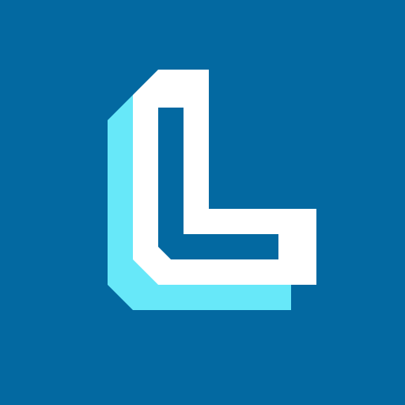

I你選的方向

原稿
保留作為對照。
白 L、青色疊片與藍色負形。
LOUIS LI / I · REFINEMENT
同一個設計，微調疊片對齊、線寬與切角。原稿放在一起，方便看出差別。
保留作為對照。
白 L、青色疊片與藍色負形。

前後兩層統一錯位 32。
收短青色尾端，視覺更輕、更準。
加寬藍色刻線，保留均勻白邊。
32px 時，內部的 L 更清楚。
尾端也加入 45° 切角。
外輪廓與內刻線，都有收尾。
I1 最接近原稿、也最均衡；I2 著重小圖辨識；I3 更有切削感。現用網站圖示尚未切換。回看第三輪